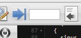

Projects previously opened may be accessed directly from a tooltip (see below).
The purpose of each button is displayed in a tooltip when the mouse stays over the icon. Some button requires explanations.
Open
 To open a file or project. If the extension is .prj, an extra button "load" is displayed to open the project as current project, while the "edit" button allows to edit its content.
To open a file or project. If the extension is .prj, an extra button "load" is displayed to open the project as current project, while the "edit" button allows to edit its content.
Projects previously opened may be accessed directly from a tooltip (see below).
Save
 To save the content under a new filename. To update a file previously loaded, without dialog box, type CTRL-S instead.
To save the content under a new filename. To update a file previously loaded, without dialog box, type CTRL-S instead.
This is a set on the toolbar formed by an icon and a text input field. Hovering on the arrow icon brings up a tooltip-menu to jump either to the beginning of the document or at the bottom.
You can also enter directly a line number. The editor jumps directly to the number entered after a short time after the strike, it is useless to hit Enter.
Close
This button is important because, before to close the program, it saves the environment and verifies also that the current document is saved. If you close the browser without to click on this button, your last edits will be lost. The same if you reload the page.
CTRL-S: Save the content in the same file.
CTRL-C: Copy the selection.
CTRL-X: Cut the selection.
CTRL-V: Past the selection.
CTRL-Z: Undo the last edit.
CTRL-Y: Redo what have been cancelled.
CTRL-G: Go to line.
CTRL-F: Find. (F3 for next occurent).
CTRL-H: Find and replace.
TAB: Indent.
SHIFT-TAB: Unindent.
These operations are done with a window that opens in place of the editor, by clicking the Open or Save icon.
You click Cancel to return to the editor.
To change the drive or go directly to a directory, enter the drive name or the path in the input field at the bottom, and wait a second. For example, to go to the root of C, type:
c:/
The last character must be / to denote a directory.
A project is a source file list on the left of the editor.
The current file can be added to the project by clicking on this  icon.
icon.
If no project file is opened, a window is opened to select a path. Add the name of the new project to the path, in the field at the bottom. The .prj extension will be added automatically. You can then load a project from the loading windows by clicking a file with the .prj extension, or from the project list displayed in a tooltip.
To remove a file from the project, click the right mouse button on its name to select it and click on  icon.
icon.
The rightmost icon is used to close the project. This does not delete the project file.
You do not need to save the project, it is a persistent object, always updated. The cursor position in each source file is saved.
If you move the mouse over the name of the current projet at the bottom of the window, a tooltip appears with the list of projects created or loaded by the editor. Click on a name to open a project.
To remove a name from this list, you must edit the file aedit.ini.js in the code subdirectory. Then you must reload the page with the button of the navigateur to update data in memory. Otherwise the file manually modified could be overwritten by data in memory.
© 2016-2017 Denis Sureau